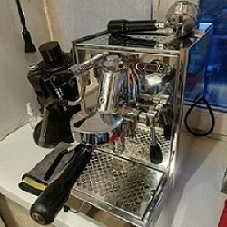

Помогите выбрать кофемашину!☕
ЕвгенияВсем привет!👋 Подруга купила недавно себе эспрессо-кофемашину "Bezzera Unica PID" за 130к рублей. Говорит, что теперь всего за несколько мгновений готовит себе вкуснейший и ароматный кофе, будь то эспрессо или густой капучино.😍

Я Вот лично из множества кофемашин остановилась на двух "Rocket Espresso Appartamento TCA" и "Profitec Pro 500 PID".
Может кто-то ими пользовался и может сказать плюсы и минусы данных машин.😉